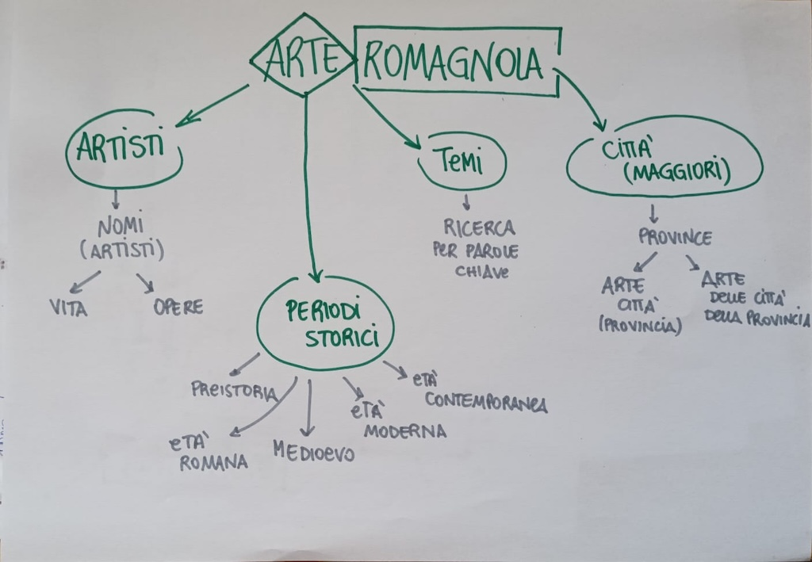
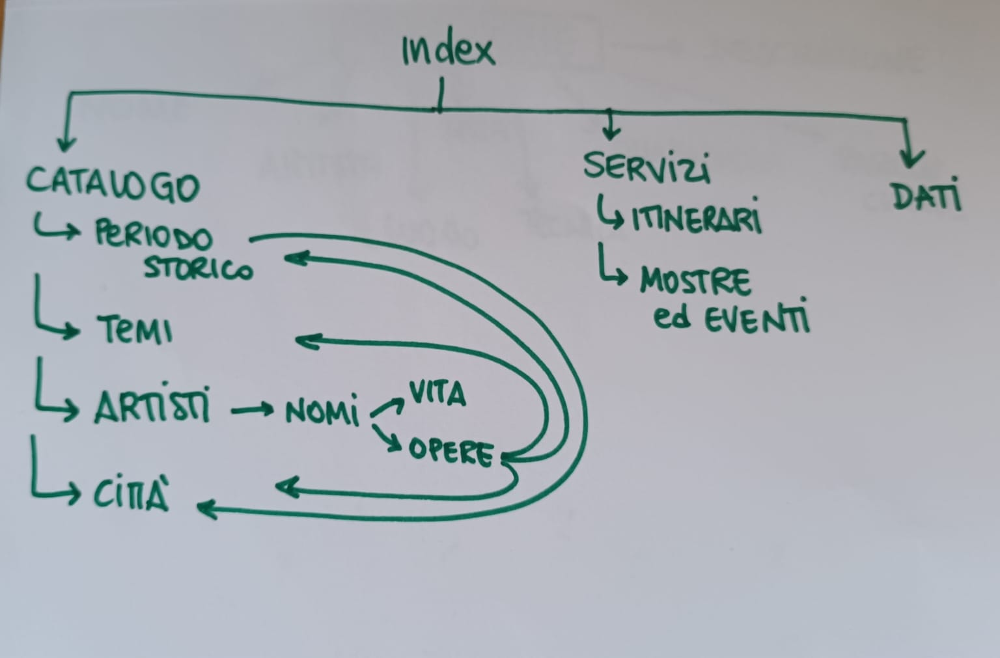
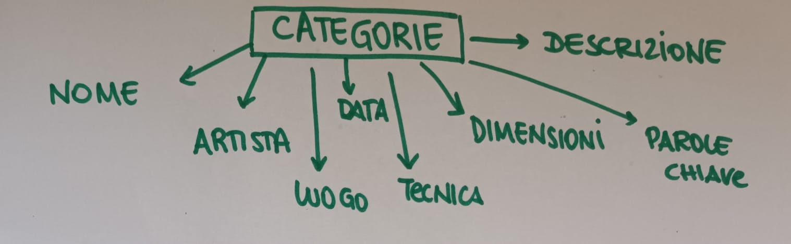
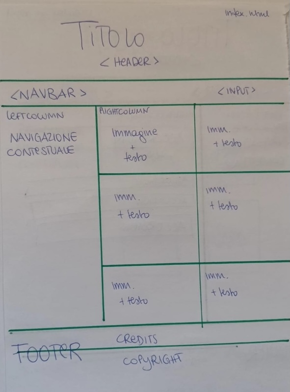
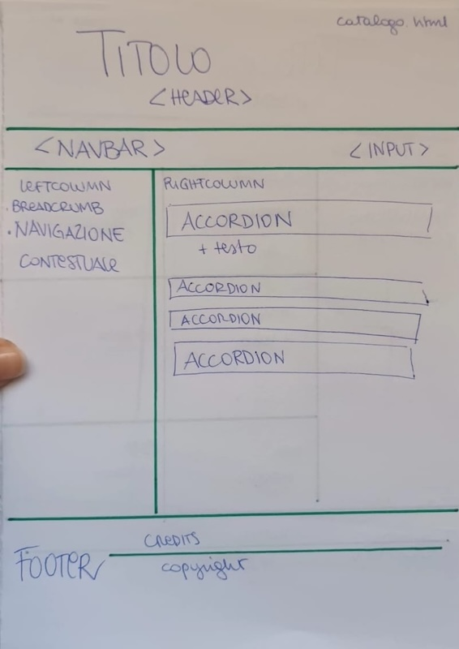
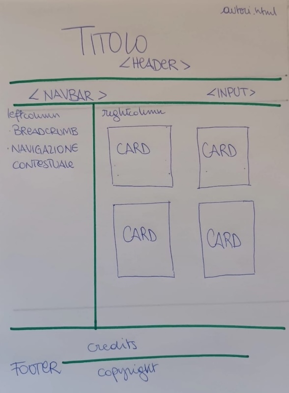
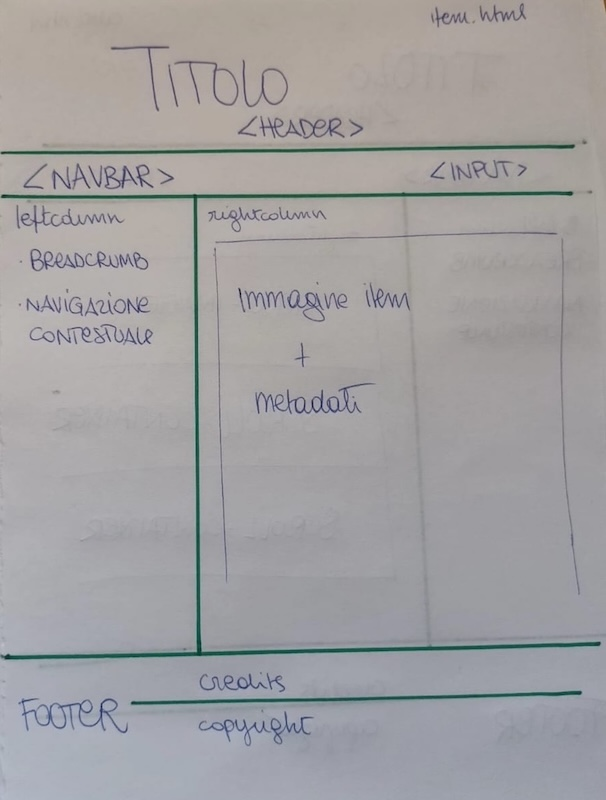

Questa risorsa digitale è un catalogo delle opere d'arte conservate in Romagna.
Molti sono gli artisti passati nel territorio della Romagna nel corso dei secoli; alcuni però sono passati inosservati e, spesso, sono stati dimenticati. Questo sito si propone di raccogliere le opere che si trovano nell'area romagnola, con l'intento implicito di riscoprire l'arte che ci circonda, a volte nascosta o dimenticata.
Per creare la risorsa Web è stato utilizzato HTML 5, con link a CSS e Javascript, oltre a collegamenti esterni a Youtube, Wikipedia ed altri siti
Il design è responsive e nel CSS è stato inserito anche il Media Query, con la funzione di rendere le pagine adatte ai vari dispositivi, così da poter aprire la pagina Web anche su smartphone e tablet.
Per quanto riguarda l'accesibilità: le immagini presentano attributo ALT (alternative text che descrive l'immagine, con la funzione di spiegare cosa si vede sia quando questa non si carica sia perché possa essere "letta" dallo screen reader per persone non vedenti) e TITLE (testo informativo aggiuntivo che appare al passaggio del mouse).
Il sito è pensato per creare una maggiore consapevolezza dell'arte in territorio romagnolo. Ci sono autori e opere degne di nota ma che spesso rimangono sconosciute, anche per chi può sempre ammirarle; facendo parte anch'esse della nostra cultura artistica, ho ritenuto giusto dare anche a tali opere il rilievo che si spettano e permettere a tutti di poterle conoscere. Questo catalogo ha dunque l'obiettivo di raccogliere le opere sparse nel territorio, sia le più conosciute, sia quelle ignote
Questa risorsa digitale è pensata per vari tipi di utenti: un turista, uno studente che voglia approfondire una determinata opera conservata in Romagna, un semplice appassionato d'arte, una persona curiosa di scoprire il proprio territorio. L'accesso è libero: il sito è pensato come un luogo di ricerca, consultazione e approfondimento, senza necessità di iscrizione o registrazione per attivare ulteriori e/o differenti servizi
La comunicazione avviene principalmente attraverso testi e immagini. Dove possibile, perchè esistenti, sono pensate anche risorse video per approfondimento. Inoltre, come già detto, sono stati inseriti gli attributi ALT e TITLE per migliorare l'accessibilità al sito
I contenuti sono in parte conservati in rete, in parte su volumi cartacei (vedi 7.Bibliografia e sitografia). I nuovi contenuti sono un'elaborazione di informazioni tratte da questi supporti
Sul tema scelto per la risorsa Web esistono già diversi portali che trattano contenuti affini, ma nessuno copre in maniera completa o specifica l'argomento scelto per il progetto. In particolare, due esempi di risorse presenti sul Web confrontate per la creazione del sito sono il Catalogo generale dei Beni Culturali e VisitRomagna.
Il primo intende coprire l'intero patrimonio nazionale in modo enciclopedico e con taglio tecnico, per una consultazione quasi scientifica delle opere. Ma, attraverso la ricerca, si è visto che alcuni autori e opere minori non sono presenti, risultando quindi incompleta (da qui, in parte, l'esigenza di creare un sito che comprendesse anche questi); il secondo sito Web copre il territorio romagnolo ma con un'attenzione prettamente turistico-promozionale (eventi, itinerari, esperienze), ma non approfondisce i contenuti specifici dell'arte con il livello di dettaglio necessario.Dal punto di vista dei contenuti, quindi, non sempre si può fare riferimento a queste risorse.
Ho ritenuto dunque necessaria la creazione di un nuovo sito perché nessuno dei portali esistenti guarda all'arte in territorio romagnolo in maniera approfondita e specifica. L'intento quindi è colmare questa mancanza, riprendendo però pattern e servizi già collaudati, come per esempio la sezione itinerari, una mappa, etc...
Il Catalogo generale dei Beni Culturali è strutturato nel seguente modo: una sticky navbar nell'header, una sezione con due division (div) con le cards per raccogliere gli autori e i luoghi della cultura, un'altra sezione con il catalogo, una barra di ricerca, i settori in cui navigare e una mappa per località; c'è poi una sezione per gli itinerari (sempre con classe cards), e un footer con informazioni istituzionali, contatti, link utili e riferimenti normativi. Per quanto riguarda il design, l'interfaccia adotta uno stile sobrio con una palette nei toni del blu, poche decorazioni e un layout chiaro e leggibile.
VisitRomagna è costruito invece nella seguente modalità: l'header presenta una hero image con logo, i social media della pagina, icona per la ricerca e la lingua, sotto la quale è presente la barra di navigazione primaria (navbar) con dropdown buttons; la homepage è divisa in sezioni, (eventi, news, itinerari) presentate attraverso l'utilizzo di cards per organizzare i contenuti, intervallate da una responsive image grid e informazione su trasporti e località e vengono poi inseriti approfondimenti tramite link video; infine, è presente il footer con link ai social media (facebook, instagram e youtube), download,contatti, galleria foto, informazioni sulla privacy, link utili, note legali, etc... Il design è chiaro, con colori che richiamano il mare, caratteristico del territorio, con una scrittura leggibile sin dal primo impatto visivo



Le categorie utilizzate per la descrizione dei dati di questa collezione sono le seguenti: nome (dc.title), autore (dc.creator), data (dc.date), luogo (dc.coverage), tecnica (dc.format), dimensioni (dimension), parole chiave (keywords) e descrizione (dc.description). I dati sono contenuti in DATI, presente nella barra di navigazione primaria





La pagina Web è strutturata in modo da facilitare la navigazione dell'utente e la consultazione dei contenuti: la navigazione principale si trova nella navbar, nel quale è presente anche una barra di ricerca; c'è poi una struttura a due colonne, in cui nella parte sinistra sono presenti gli elementi di navigazione contestuale, mentre nella colonna di destra è inserito il corpo; la parte finale è occupata dal footer in cui sono presenti i credits, le licenze e il link che porta al web project plan e il copyright
L'aspetto grafico del sito è pensato per rendere la navigazione semplice e leggibile. La tipografia contribuisce a distinguere i diversi livelli di informazione attraverso titoli, sottotitoli ed elenchi. I componenti dell'interfaccia sono organizzati in modo coerente e forniscono un feedback visivo all'utente.
L'uso dei colori, delle icone e dei font è anch'esso finalizzato a migliorare la comprensibilità e leggibilità dei contenuti: i colori aiutano a distinguere le sezioni e a guidare l'attenzione dell'utente; i font sono scelti per garantire la chiarezza e coerenza visiva all'interno dell'intero sito .
I servizi di browsing utilizzati sono le breadcrumbs (elemento di navigazione che mostra lo schema gerarchico dell'interfaccia e mostra all'utente la pagina in cui si trova all'interno del sito, permettendo di risalire facilmente alle sezioni precedenti); una navigazione per parole chiave (metodo di navigazione che permette di trovare i contenuti attraverso le keyword, spesso tramite barra di ricerca o tag); gli indici per parole (elenco organizzato alfabeticamente di argomenti, termini o contenuti presenti nel sito; l'utente può poi cliccare sul termine che gli interessa per raggiungere direttamente il contenuto correlato); infine, la barra di ricerca (elemento che permette di inserire una parola o una frase per cercare contenuti all'interno di un sito; la funzione principale è quella di aiutare l'utente a trovare rapidamente informazioni senza navigare manualmente tra menu e pagine)
Sono stati utilizzati:
riferimenti biblio/sitografici relativi alle fonti impiegate:
LA VIA DELLA CROCE. UNO SGUARDO SULL'ARTE SACRA CONTEMPORANEA 2025, tesi di laurea di Maria Anna Maffi, Università degli studi di Urbino Carlo Bo, Dipartimento degli studi umanistici, corso di laurea: Storia dell'arte
Di confronto per la crezione del sito:
Crocifisso di Rimini, Tempio Malatestiano: